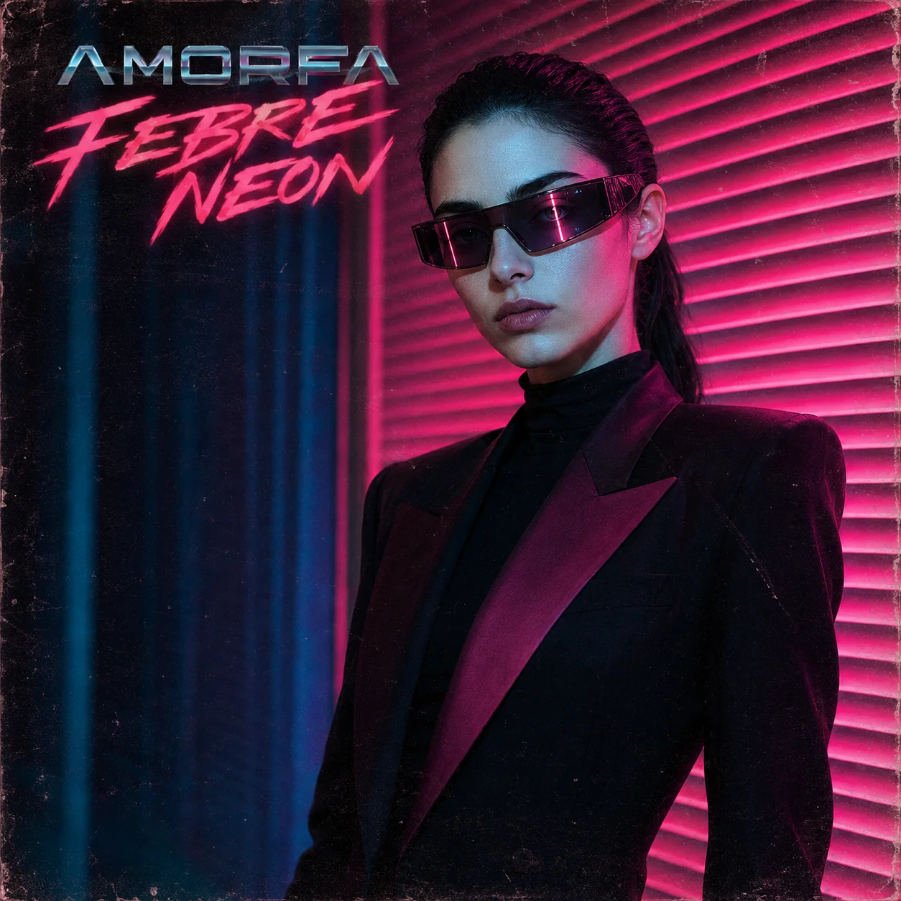

Rituais
Quatorze faixas sobre hábito, devoção, vigilância, corpo e os deuses que continuamos fabricando.

Lançamentos


Depois da memória, o mundo.
Rituais é o primeiro álbum da AMORFA que deixa de orbitar diretamente Onde se guarda o que não existe mais. O foco muda do arquivo íntimo para sistemas que disciplinam desejo, corpo, fé, tecnologia e pertencimento.
O encarte reúne fotografia, comentários sobre as faixas e textos de R. J. Wulf sobre feminismo, ateísmo, panteísmo científico e a atração humana por altares — inclusive os que não chamamos de religião.
Ler o encarte completo →Febre Neon
O próximo ciclo já está aberto. Outra paleta, outra década imaginada, outra direção de movimento.
Pré-salvar Febre Neon ↗
AMORFA, em rotação
Uma porta de entrada para o catálogo — lançamentos, faixas essenciais e o percurso mais recente do projeto.
Abrir no Spotify ↗


Pop eletrônico sombrio e música alternativa. Composição, direção visual e experimentação sonora — construído inteiramente com ferramentas de IA generativa, curadoria e método.
Sobre a AMORFA →